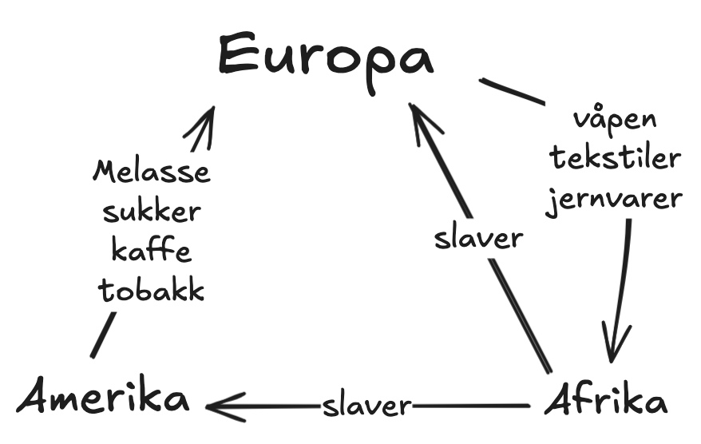

 Trekanthandelen gikk ut på at europeere hadde etablert kolonier i amerika og karibia for å produsere sukker, melasse, kaffe og tobakk, noe som var en ekstremt laboriøs prosess, og ikke minst farlig. dette gjorde at europeere satte slaver til arbeidet, ettersom de var billigere enn å hyre inn europeere til jobben. etterspørselen for varene amerika og karibia produserte økte, som førte til at eksporten av slaver fra afrika økte i takt med etterspørselen for varer. I afrika byttet europeere diverse tekstiler, våpen og jernvarer mot slaver.